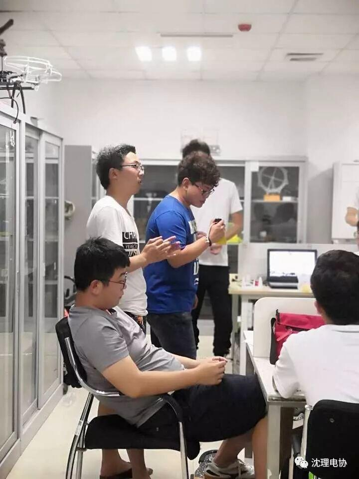
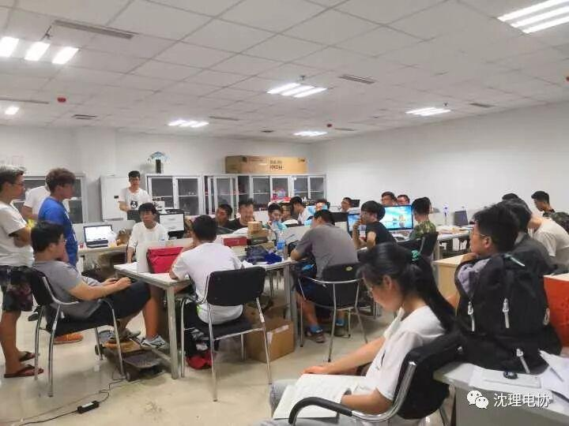
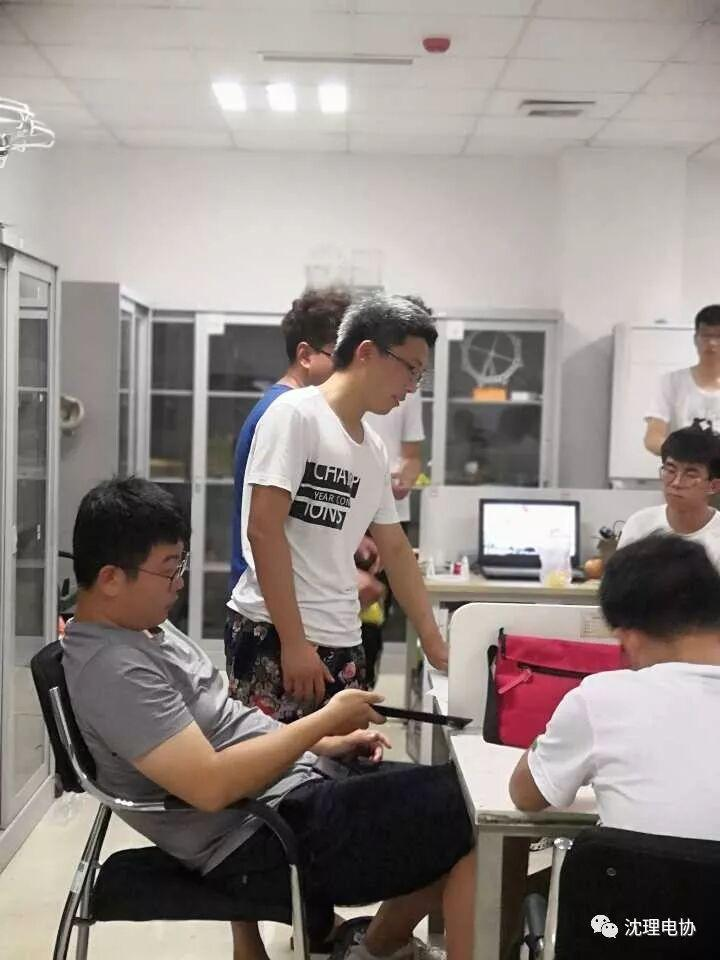
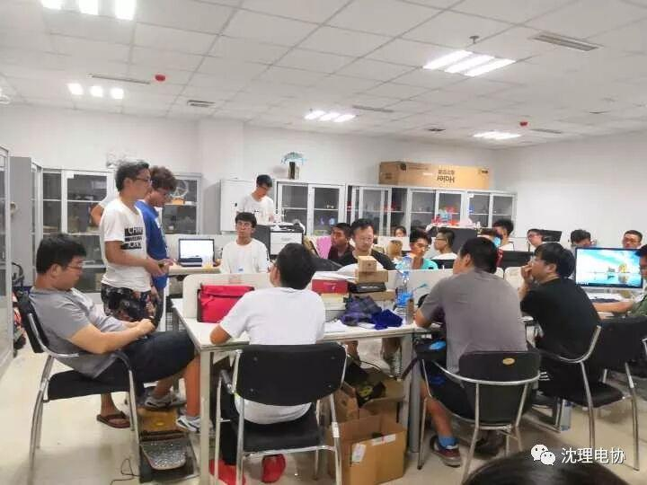

备战2018辽宁省机器人大赛
2018年辽宁省机器人大赛规则已经下发，对比赛有意愿的同学在今天下午五点到六点半在文体中心210，讨论了有关2018辽宁省机器人大赛的组队，有关想法，规则和一些注意事项等问题。





比赛规则要点
2.每支参赛队拥有1台自动机器人；
3.比赛开始前双方队员有30秒的准备时间，在准备时间双方将自动机器人摆放到出发区并开电；30秒结束后，双方队员回到准备区；副裁判投放矿石，待矿石稳定后，主裁判5秒倒计时后吹哨示意比赛开始，在5秒倒计时期间，每队只能有一名队员可以在靠近各自机器人的场外等待启动机器人；
4.裁判吹哨示意开始比赛后，自动机器人才能启动离开出发区；参赛队员回到场地外的准备区，直到比赛结束；
5.自动机器人在采矿区内进行拾取矿石任务，储藏室的矿石不允许再次被取出，落到场地外的矿石作废；
6.自动机器人将采集到的矿石放到储藏室内；
7.自动机器人单次采矿数量不限；
8.比赛开始后，自动机器人不允许重启和断电；若3分钟之内双方都申请断电，则裁判提前宣布比赛结束。